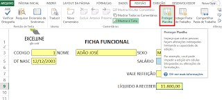
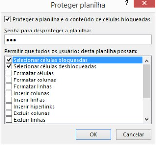
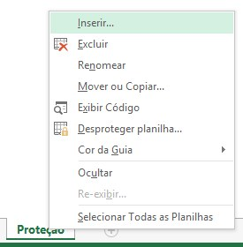

A proteção de planilhas é um recurso antigo e ainda pouco usado. Em geral os usuários não se preocupam com a segurança física das informações e deixam as planilhas frágeis, abertas a qualquer alteração. Segundo a Microsoft é possível impedir, por acidente ou de propósito, que alguém altere, mova ou exclua dados importantes, protegendo elementos da planilha ou da pasta de trabalho, com ou sem senha.
Um alerta importante
Proteger elementos da planilha não é o mesmo que proteger o arquivo com senha. A proteção de elementos não defende a pasta de trabalho de um usuário mal-intencionado e para segurança de verdade o ideal é proteger o arquivo inteiro com senha, o que deixa só usuários autorizados verem ou modificarem os dados.
Planilha: bloqueada, oculta e protegida
O exercício usa um formulário com campos digitáveis, código, nome, sexo, data de nascimento e salário e campos de cálculo, vale refeição e líquido a receber, que precisam ser protegidos. Por padrão toda célula tem a propriedade BLOQUEADAS marcada e OCULTAS desmarcada, o que significa que, depois de protegida a planilha, tudo fica travado para edição e as fórmulas continuam visíveis.
Por isso o primeiro passo é desmarcar BLOQUEADAS nas células digitáveis, selecionando-as e usando FORMATAR CÉLULAS, na aba PROTEÇÃO. Os campos de cálculo permanecem bloqueados.

Só depois de definir bloqueio e ocultação é que ligamos a proteção, em REVISÃO, PROTEGER PLANILHA, informando uma senha, que é opcional. Se alguém tentar alterar o vale refeição, o Excel avisa que a célula é protegida, mas a fórmula ainda pode ser lida na barra de fórmulas.

Para esconder também as fórmulas desproteja a planilha, marque a propriedade OCULTAS nas células cujas fórmulas devem ficar em sigilo e proteja de novo. Agora a planilha está protegida tanto na edição quanto na exibição das fórmulas.
Proteger a pasta de trabalho
Até aqui protegemos só o que está dentro da planilha e enquanto a pasta de trabalho não for protegida a própria planilha pode ser excluída e outras podem ser inseridas, o que compromete a segurança. Em REVISÃO, PROTEGER PASTA DE TRABALHO esse risco diminui.
